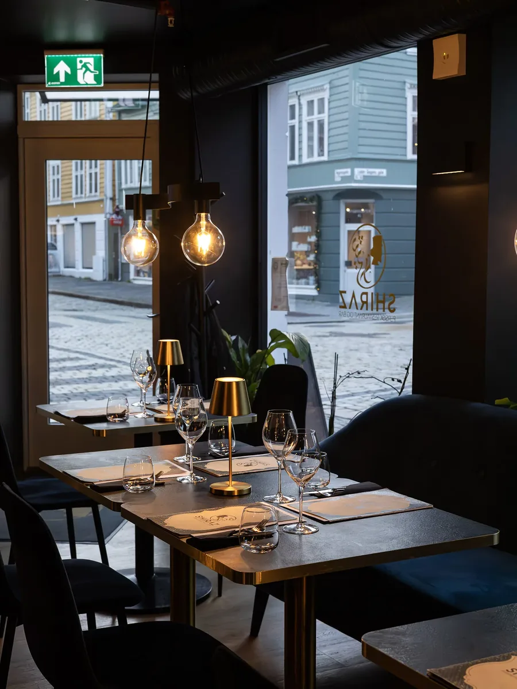

Om Shiraz
Shiraz er oppkalt etter byen som i århundrer har vært kjent for sin poesi, vin og gjestfrihet. Hos oss møtes de tradisjonene ved bordet – safranris, ferskgrillede kababspyd, rike gryteretter og nybakt nanbrød, tilberedt fra bunnen med de samme krydderne og oppskriftene som har gått i arv i generasjoner. Enten det er en intim middag for to eller en kveld med venner, ønsker vi deg velkommen til ekte persisk matkultur i hyggelige omgivelser.
Tir–søn fra kl. 15:00 · Mandag stengt
Bordreservasjon
Bordreservasjon er enkelt hos oss. Sikre deg plass til neste måltidsopplevelse, enten det er en romantisk kveld for to eller en hyggelig sammenkomst med venner.
Book bordHjem til deg
Nyt våre retter hjemme i komforten av din egen stue. Bestill enkelt på nett, så tar vårt kjøkken seg av resten mens du slapper av.
Bestill takeawayFra kjøkkenet
Stemningen hos Shiraz
Gyllent lys, dempet musikk og en atmosfære som er like fin til hverdags som til fest. Restauranten kombinerer autentiske smaker med omgivelser som gjør enhver middag til en anledning – uansett om det er en rolig kveld ved baren eller en lengre middag med gode venner.
Se hele menyenBesøk oss
| Mandag | Stengt |
| Tirsdag – torsdag | 15:00 – 21:30 |
| Fredag – lørdag | 15:00 – 23:00 |
| Søndag | 15:00 – 21:30 |
